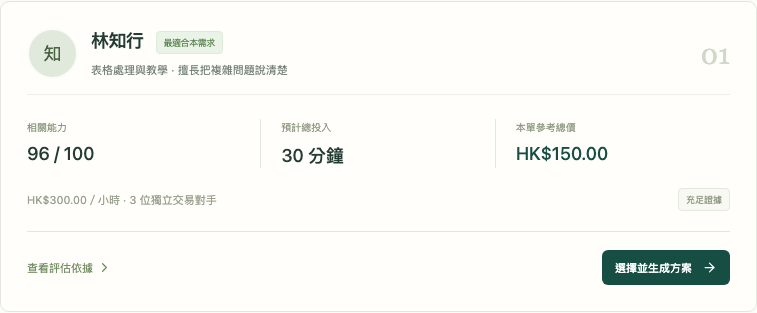

平臺分析能力與投入
讓非標準服務有清楚的交換約定
「我需要有人幫我整理表格。
該找誰？需要多少時間？
我能用英語交流來交換嗎？」
技能要求、難度、時段與在途容量
不滿足條件，就不列為合格候選。
同類履約與結構化驗收
已復核作品和測評。
推薦分 = 0.6 × 適配 + 0.3 × 品質 + 0.1 × 證據
沒有證據時顯示待驗證。重複對手與作品有計入上限。
| 候選人 | 相關品質 | 參考時薪 | 預計工時 | 本單參考總價 |
|---|---|---|---|---|
| 林知行 | 96 | HK$300 | 30 分鐘 | HK$150 |
| 陳思維 | 85 | HK$250 | 60 分鐘 | HK$250 |
| 許映美 | 75 | HK$200 | 90 分鐘 | HK$300 |
品質影響本類時薪，相關歷史影響工時估計。
表格輔導參考 HK$150／小時
英語交流參考 HK$100／小時
平臺枚舉合法服務時長
選擇雙方參考價最接近的候選。
準備和差旅只計入事前約定的投入。實際耗時不會自動改寫已簽方案。
乙仍需提供原定 45 分鐘英語交流。
雙方可以確認補做或明確豁免。
先行投入按輪限制
已確認的貢獻保留
原義務未結清前不能關閉訂單
增加驗收操作，限制不可拆分服務。
平臺不能保證追回線下損失。

候選能力、工時和價格計算
雙簽、並發、版本與私有資料權限
互換、模擬資金、退出和原義務補做
實際測試結果與瀏覽器紀錄隨倉庫交付。
與社羣試用者比較手工協商流程
核對工時預測和條款理解
校準價格基準與能力評估
目前不宣稱真實市場價格準確性，不提供真實支付或身份核驗。